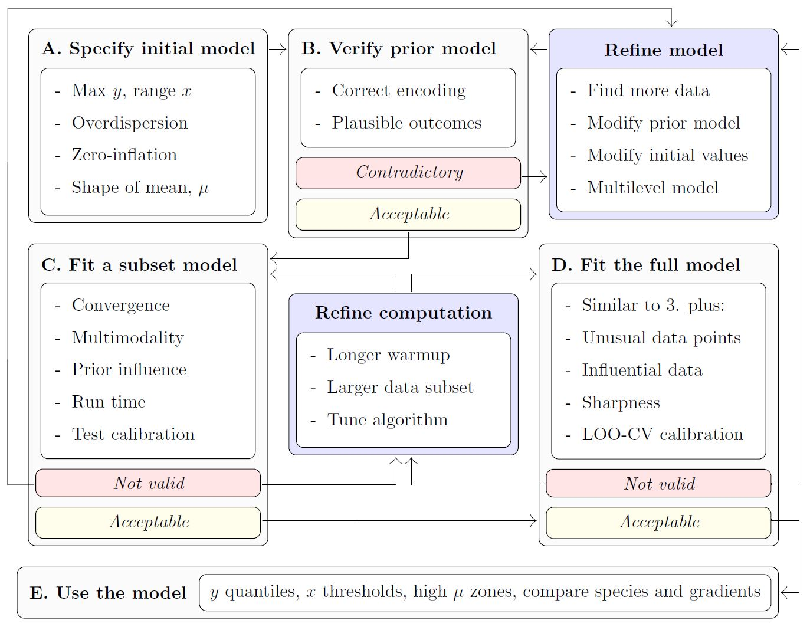
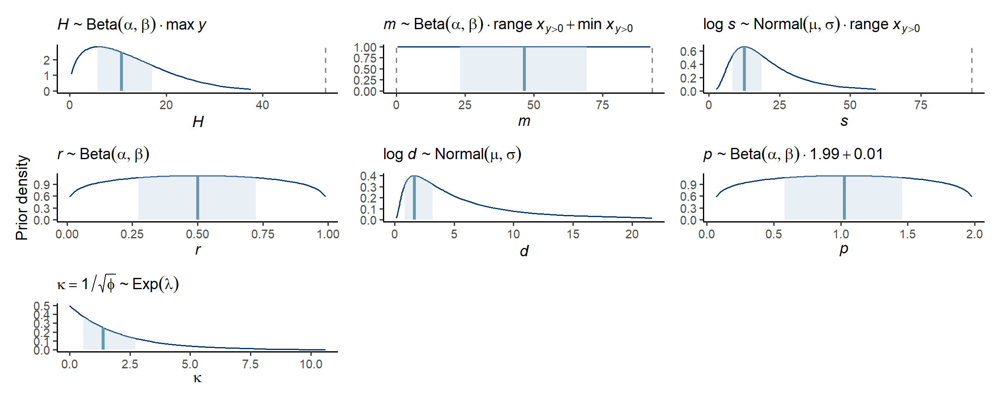

Getting started
getting-started.RmdOverview
This vignette presents a minimal workflow for modelling the distribution of a species abundance along an environmental gradient. See …
Define y, x, mu, ….
The rest of this vignette proceeds as follows …
Load packages and stan files
library(modskurt)
library(ggplot2)
# only needs to be run every time package installed or updated
compile_stanmodels()## [1] "Already compiled: discrete.stan"
# for reproducibility
set.seed(123456)Case study - Tuangi vs. mud
The NZ cockle vs sediment mud content.
data(tuangi)
tuangi## # A tibble: 764 × 11
## year lon lat count mud_pct tn_conc toc_pct tp_conc sst_min sst_avg
## <chr> <dbl> <dbl> <dbl> <dbl> <dbl> <dbl> <dbl> <dbl> <dbl>
## 1 2017 175. -40.5 0 19.8 250 0.32 380 12.8 15.3
## 2 2018 175. -40.5 1 26.7 500 0.3 380 12.9 15.6
## 3 2017 175. -40.5 0 20 250 0.29 370 12.8 15.3
## 4 2018 175. -40.5 0 23.3 250 0.24 360 12.9 15.6
## 5 2017 175. -40.5 1 17.2 250 0.28 350 12.8 15.3
## 6 2018 175. -40.5 0 19.9 250 0.21 330 12.9 15.6
## 7 2017 175. -40.5 0 26.9 250 0.28 380 12.8 15.3
## 8 2018 175. -40.5 0 44.1 500 0.39 420 12.9 15.6
## 9 2017 175. -40.5 0 22.5 250 0.26 380 12.8 15.3
## 10 2018 175. -40.5 0 34.8 250 0.34 390 12.9 15.6
## # ℹ 754 more rows
## # ℹ 1 more variable: sst_max <dbl>A. Specify initial model
spec <-
mskt_spec(data = tuangi,
# response and gradients (optional names for tidier outputs)
y = c('Tuangi (count)' = 'count'),
x = c('Mud (%)' = 'mud_pct'),
# distribution of abundance
dist = 'nb',
# shape of dist mean function, see ?mskt_shape()
shape = 'rdp',
# make predictions for every 1% of mud content
pred_grid = 0:100)
str(spec)## List of 20
## $ sample_prior: int 0
## $ hp_H : num [1:2] 1.5 5
## $ hp_m : num [1:2] 1 1
## $ hp_s : num [1:2] -2 0.6
## $ hp_r : num [1:2] 1.2 1.2
## $ hp_d : num [1:2] 0.5 1
## $ hp_p : num [1:2] 1.2 1.2
## $ use_r : int 1
## $ fix_r : num 0.5
## $ use_d : int 1
## $ fix_d : num 0
## $ use_p : int 1
## $ fix_p : num 1
## $ use_zi : int 0
## $ hp_kap : num 0.5
## $ hp_g0 : num [1:2] 3 1.5
## $ hp_g1 : num 3
## $ Nrep : int 101
## $ xrep : int [1:101] 0 1 2 3 4 5 6 7 8 9 ...
## $ data :function (prop = 1, seed = NULL)
## ..- attr(*, "srcref")= 'srcref' int [1:8] 97 16 130 3 16 3 1104 1137
## .. ..- attr(*, "srcfile")=Classes 'srcfilealias', 'srcfile' <environment: 0x0000024e2ef48f18>
## - attr(*, "pars")= chr [1:7] "H" "m" "s" "r" ...
## - attr(*, "nms")=List of 2
## ..$ y: chr "Tuangi (count)"
## ..$ x: chr "Mud (%)"
## - attr(*, "dist")= chr "nb"
## - attr(*, "shape")= chr "rdp"
## - attr(*, "class")= chr [1:2] "mskt-spec" "list"B. Verify initial model specification
check_prior_dens(spec)
# check_prior_mskt(spec) # preds (cover all possible)
# check_prior_dist(spec) # ymax (severe tests)
# check_prior_zero(spec) # zi link
# OPTIONAL: refine model specC. Fit subset model
fit_train <-
mskt_fit(spec,
# set the training sample
train_prop = 0.3,
iter_warmup = 200,
iter_sampling = 100,
chains = 6,
parallel_chains = 6,
# for testing
show_messages = TRUE, show_exceptions = TRUE)
# OPTIONAL: refine model spec or fit parameters
check_computation(fit_train)## spec: nb[Hmsrdp] using 229 obs out of 762 (30% sample)
## post: 6 chains each with 100 draws (600 total)## $summary
## # A tibble: 7 × 10
## variable mean median sd mad q5 q95 rhat ess_bulk ess_tail
## <chr> <num> <num> <num> <num> <num> <num> <rhat> <ess> <ess>
## 1 H 22.2 21.2 7.21 8.35 12.7 34.9 1.02 276 (0.5) 285 (0.5)
## 2 m 13.7 13.4 5.41 4.36 5.87 22.9 1.04 231 (0.4) 134 (0.2)
## 3 s 23.0 22.1 5.26 4.29 16.2 32.9 1.01 242 (0.4) 297 (0.5)
## 4 r 0.727 0.757 0.143 0.124 0.430 0.903 1.02 203 (0.3) 259 (0.4)
## 5 d 0.600 0.561 0.300 0.303 0.181 1.19 1.00 380 (0.6) 295 (0.5)
## 6 p 0.731 0.733 0.328 0.373 0.196 1.27 1.02 273 (0.5) 400 (0.7)
## 7 kap 1.13 1.13 0.0656 0.0636 1.03 1.24 1.01 339 (0.6) 398 (0.7)
##
## $diagnostics
## chain_id warmup sampling total num_divergent num_max_treedepth ebfmi
## 1 1 1.483 0.702 2.185 0 0 1.0103225
## 2 2 1.691 0.842 2.533 0 0 0.9241363
## 3 3 1.455 0.835 2.290 0 0 0.8571377
## 4 4 1.416 0.682 2.098 0 0 1.1684455
## 5 5 1.386 0.672 2.058 1 0 1.0338997
## 6 6 1.504 0.878 2.382 0 0 0.9378795
# OPTIONAL: refine model spec or fit parametersD. Fit full model
fit_full <-
mskt_fit(spec,
chains = 4,
parallel_chains = 4,
# for testing
show_messages = TRUE, show_exceptions = TRUE)
check_computation(fit_full)## spec: nb[Hmsrdp] using 762 obs out of 762 (100% sample)
## post: 4 chains each with 1000 draws (4000 total)## $summary
## # A tibble: 7 × 10
## variable mean median sd mad q5 q95 rhat ess_bulk ess_tail
## <chr> <num> <num> <num> <num> <num> <num> <rha> <ess> <ess>
## 1 H 22.0 21.1 6.78 7.27 12.8 34.4 1.00 1487 (0.4) 2029 (0.5)
## 2 m 13.4 13.2 2.91 2.79 8.93 18.3 1.00 1880 (0.5) 1401 (0.4)
## 3 s 22.7 22.1 3.96 3.43 17.5 30.0 1.01 1305 (0.3) 1752 (0.4)
## 4 r 0.765 0.779 0.0885 0.0796 0.596 0.881 1.00 1609 (0.4) 1925 (0.5)
## 5 d 0.534 0.508 0.246 0.244 0.178 0.986 1.00 1817 (0.5) 1537 (0.4)
## 6 p 0.753 0.766 0.302 0.325 0.240 1.23 1.00 1633 (0.4) 1674 (0.4)
## 7 kap 1.19 1.19 0.0377 0.0374 1.13 1.25 1.00 2881 (0.7) 2220 (0.6)
##
## $diagnostics
## chain_id warmup sampling total num_divergent num_max_treedepth ebfmi
## 1 1 20.594 26.395 46.989 0 0 0.9800329
## 2 2 20.067 27.341 47.408 0 0 0.8176009
## 3 3 20.415 29.373 49.788 0 0 0.9935090
## 4 4 20.179 27.728 47.907 0 0 0.8122649
# OPTIONAL: refine model spec or fit parametersE. Use the model
Plot summaries of the abundance distribution
# plot the distribution of abundance along the gradient
abundance_dist(fit_full,
summaries = c('mean', 'median', 'q90'),
# whether to use expectations and quantiles from nb or zinbl
include_zero_inflation = TRUE)
Calculate ranges of x for different percentages of abundance measures
# assess different range measures of abundance along the gradient
abundance_range(fit_full,
# smallest range with ...
capture_pct = 75,
# mean abundance >= % of max abundance (highest mean)
using_range = 'high_zone',
# which distribution summary to use
based_on = 'q90',
# one-sided threshold or central range
region = 'centre',
# whether to use expectations and quantiles from nb or zinbl
include_zero_inflation = FALSE)##
## Species range (see x.avg row) calculated as the region of x where the 0.9 prob. quantile of abundance (Q[90]) is within 75% of the highest value of Q[90] along x (averaged across posterior draws):## left centre right
## q90.avg 11.2200000 20.6600000 5.0505672
## q90.se 0.3548958 0.2224355 0.0761786
## x.avg 0.0000000 14.0831218 64.7894328
## x.se 0.0000000 0.3161532 0.5070136Visually display abundance ranges
# or plot them as well
# we'll compare high-zone and most-dens here using patchwork
library(patchwork)
(
abundance_range(fit_full,
capture_pct = 75,
using_range = 'high_zone',
based_on = 'q90',
region = 'centre',
plotted = TRUE,
range_colour = 'red') +
labs(subtitle = '75% Highest Abundance Zone (HAZ)')
) + (
abundance_range(fit_full,
capture_pct = 75,
using_range = 'most_dens',
based_on = 'q90',
region = 'centre',
plotted = TRUE,
range_colour = 'blue') +
labs(y = NULL, subtitle = '75% Abundance Density Limit (ADL)')
) +
plot_layout(guides = 'collect')##
## Species range (see x.avg row) calculated as the region of x where the 0.9 prob. quantile of abundance (Q[90]) is within 75% of the highest value of Q[90] along x (averaged across posterior draws):
## left centre right
## q90.avg 11.7000000 20.160000 4.89212121
## q90.se 0.3223004 0.188138 0.06698912
## x.avg 0.0000000 14.560896 65.44787879
## x.se 0.0000000 0.360336 0.41358159
##
## Species range (see x.avg row) calculated as the smallest region of x where the density of 0.9 prob. quantile of abundance (Q[90]) is equal to 75% of the total density of Q[90] along x (averaged across posterior draws):
## left centre right
## q90.avg 19.26674426 18.3419449 7.1911905
## q90.se 0.21566991 0.1904811 0.1089447
## x.avg 7.21018728 26.8650867 57.4174603
## x.se 0.06742754 0.1587907 0.2889340
# note how HAZ prefers higher relative abundance summaries as opposed to ADL
# which considers total abundance summaries irrespective of the relative
# abundance at each x (e.g. tuangi appear quite abundant in low mud %, but
# their density along the whole gradient is skewed towards slightly higher mud
# content)
# OPTIONAL (but not advised): refine model spec or fit parameters